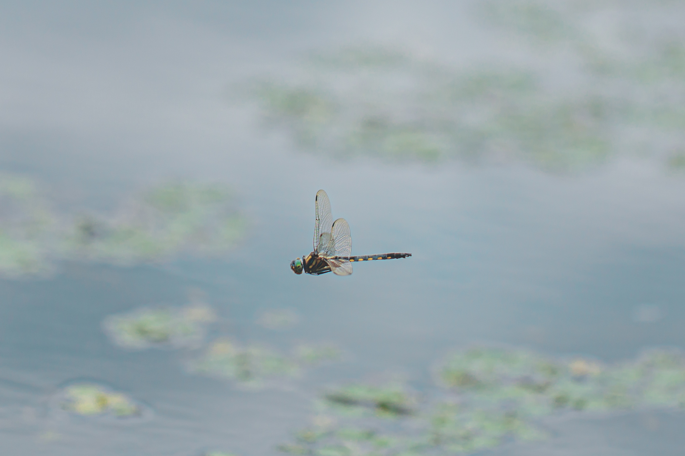

トラフトンボ撮影リベンジ
本日は飛翔撮影の練習を目的に，トラフトンボの再撮影に行った．前回の撮影ポイントに向かうと，既に先客がいた．ソーシャルディスタンスもあり，別のポイントを探す．すると，別の池に複数飛んでいるのを発見．足元も悪くなさそうなので陣地を取る．飛んでいたのはトラフトンボの雄であった．ただ，風向きが岸辺に向かって吹いていたので，ホバリングの時の向きが尻尾をこちらに向けた状態で撮影が難しい．この日は太陽も逆光で撮影条件としては厳しいものであった．

2022年5月8日 トラフトンボ ♂ 栃木県
Canon EOS R6, EF100mm F2.8L Macro IS USM, 1/2000, F2.8, ISO 100
トラフトンボ探し
本日は春のトンボであるトラフトンボの撮影を目的に出かけた．一つ目のポイントは池が複数あり，それぞれを確認していく．最初に見つかったのはセスジイトトンボであった．少し移動し，次に見つかったのはなんとオオヤマトンボであった．この時期から飛んでいるのは予想外だった．今日の目的はトラフトンボのため，次の池を探しにいく．最終的には，最後に向かった池にトラフトンボが一匹飛んでいた．池から少し離れたところを飛んでいたのと足元の悪さから撮影が難く，満足した写真が撮れなかった．そして次のポイントへ移動する．そこも池が複数あり，一つずつ確認していく．こちらも最後に向かった池にトラフトンボが飛んでいた．しかも，足場が良く岸辺の近くに飛んでいる．飛翔撮影の絶好のチャンスとなった．トラフトンボは二匹いたが，それぞれの縄張りを巡回して飛んでいた．飛翔撮影は得意ではないが，トンボが飛んでくるであろう距離にマニュアルフォーカスでピントを合わせておき，近くに来たら連写で撮りまくる．フォーカスの微妙な距離調整はカメラを前後に動かすことでピント合わせが可能になる．トラフトンボが何度も往復してくれたおかげもあり，飛翔撮影のコツが掴めたように思う．

2022年5月5日 セスジイトトンボ ♀ 栃木県
Canon EOS R6, EF100mm F2.8L Macro IS USM, 1/250, F5.6, ISO 100

2022年5月5日 トラフトンボ ♂ 栃木県
Canon EOS R6, EF100mm F2.8L Macro IS USM, 1/2000, F3.5, ISO 100

2022年5月5日 クロイトトンボ ♂ 栃木県
Canon EOS R6, EF100mm F2.8L Macro IS USM, 1/1250, F3.5, ISO 200
カワトンボ天国
昨日のムカシトンボのリベンジをしに同じ場所に向かう．しばらく待っていると，渓流沿いで産卵場所を探していると思われるムカシトンボのメスがゆっくりと飛んでいるのを見つけた．カメラを持って近づくも警戒している様子はない．シャッターチャンスを逃すまいとカメラを構えるも，一向に止まる気配がない．そして，そのまま木の中に入っていってしまい見失ってしまった．その後，ムカシトンボが現れることはなく，リベンジを果たすことはできなかった．ムカシトンボ探しは一旦終わりにして，次の目的地へ向かう．その途中で渓流の下流の様子を見てみた．そこには，数十頭ものカワトンボが飛んでいた．シャッターチャンスと思い，写真を撮りまくる．訪れた地域はアサヒナカワトンボの生息域であった．成虫の成熟度合いに応じて体と羽の色が違うようだ．成熟するにつれ，緑色から白に変化していく．また，少数ではあったが，羽がオレンジ色の個体が元気よく飛んでいた．特に，警戒心が強く近づくのが難しかったが，なんとか写真に収めることができた．

2022年5月4日 アサヒナカワトンボ ♀ 埼玉県
Canon EOS R6, EF100mm F2.8L Macro IS USM, 1/250, F8.0, ISO 100

2022年5月4日 アサヒナカワトンボ ♂ 埼玉県
Canon EOS R6, EF100mm F2.8L Macro IS USM, 1/1000, F3.2, ISO 100
藪から棒に...
本日，ムカシトンボを見ることができず，満足感が得られなかったため，帰り道にトラフトンボがいるとされている池に立ち寄ってみた．トラフトンボは発見できず，シオカラトンボが二匹いただけだった．少し時間が遅かったのだろうか，それともまだいないのか分からない．ポイントを変えて池の周りを歩いているとヨシにアジアイトトンボが止まっていたのでカメラを構えようとした．すると，少し大きめのイトトンボが飛ぶ姿があった．近寄ってみると，まさかのホソミイトトンボだった．ホソミトトンボはこの周辺地域で目撃情報を聞いたことがなかったため非常に驚いた．ヨシから細身イトであった...

2022年5月3日 ホソミイトトンボ ♀ 埼玉県
Canon EOS R6, EF100mm F2.8L Macro IS USM, 1/80, F5.6, ISO 100
渓谷のサナエトンボ
春の代表的なトンボといえば...ムカシトンボである．いざ，渓流に向かう．散策を始めると岩場でサナエトンボが羽化をしている．ダビドサナエの羽化だった．羽化を目撃するのは春先の川が比較的多い印象．他にもトンボがいないか探してみると，ダビドサナエの羽化が他に二匹確認できた．羽化後はこちらを警戒して飛びたそうにしているが，すぐには飛び立てない様子だった．とても無防備だ．羽化後はヒラヒラと舞い上がり，日光の当たる木の葉の上に止まるようだ．トンボの撮影は父親と一緒に行っているが，ヒメクロサナエ（？）を見つけたとの報告があった．どうやら高い木の葉に止まっている．どうしようもないので，しばらく待っていたところ，二匹下に降りて来た．近寄ってみると，ヒメクロサナエの未成熟個体だった．そのうち一匹は羽が折れており，もう飛べそうにない．ところで，本日の目的のムカシトンボであるが，昼前くらいに一匹だけ目撃するも，すぐにどこかへ行ってしまい撮影することは叶わなかった．また，リベンジしたい．

2022年5月3日 ダビドサナエ ♀ 未成熟 埼玉県
Canon EOS R6, RF50mm F1.8L STM, 1/320, F3.5, ISO 100

2022年5月3日 ダビドサナエ ♂ 未成熟 埼玉県
Canon EOS R6, EF100mm F2.8L Macro IS USM, 1/640, F3.2, ISO 100

2022年5月3日 ヒメクロサナエ ♀ 未成熟 埼玉県
Canon EOS R6, EF100mm F2.8L Macro IS USM, 1/60, F2.8, ISO 100
2022年トンボ撮影始動
カメラを買い替えたこともあり，トンボ撮影に行きたいと思っていた．テスト撮影を兼ねて，近所の池を散策．一箇所目のポイントは残念ながら一匹もいなかったので，二箇所目の池に向かう．幸いにも，足元の草むらにアジアイトトンボとクロイトトンボがたくさんいた．まだ未成熟個体が多く，成熟した個体は少なかった．ゴールデンウィークくらいには成熟した個体に変わっているだろうか．

2022年4月24日 クロイトトンボ ♂ 未成熟 埼玉県
Canon EOS R6, EF100mm F2.8L Macro IS USM, 1/500, F2.8, ISO 100

2022年4月24日 アジアイトトンボ 埼玉県
Canon EOS R6, EF100mm F2.8L Macro IS USM, 1/500, F2.8, ISO 200